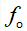
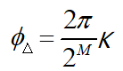
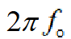
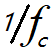
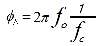

DDS 原理
DDS（直接频率合成）技术是根据奈奎斯特抽样定理及数字处理技术，把一系列的模拟信号进行不失真的抽样，将得到的数字信号存储在存储器中，并在时钟的控制下，通过数模转换，将数字量变成模拟信号的方法。
DDS 模块主要由相位累加器、查找表、DAC 转换器和低通滤波器组成，基本结构如下。

相位累加器，是 DDS 的核心组成部分，用于实现相位的累加，并输出相应的幅值。相位累加器由 M 位宽加法器和 M 位宽寄存器组成，通过时钟控制，将上一次累加结果反馈到加法器输入端实现累加功能，从而使每个时钟周期内的相位递增数为 K，并取相位累加结果作为地址输出给 ROM 查找表部分。
幅值查找表，存储着每个相位对应的二进制数字幅度。在每个时钟周期内，查找表对相位累加器输出的相位地址信息进行寻址，然后输出对应的二进制幅度数字离散值。假设查找表地址为 M 位，输出数据为 N 位，则查找表的容量大小为  。不难看出，输出信号的相位分辨率为：
。不难看出，输出信号的相位分辨率为：

DAC 转换器，将数字信号转换为模拟信号。实际上，DAC 输出的信号并不是连续的，而是根据每位代码的权重，将每一位输入的数字量进行求和，然后以其分辨率为单位进行模拟的输出。实际输出的信号是阶梯状的模拟线型信号，所以要对其进行平滑处理，一般使用滤波器滤波。
低通滤波器，由于 DAC 转换器输出的模拟信号存在阶梯状的缺陷，所以要对其进行平滑处理，滤除掉大部分的杂散信号，使输出信号变为比较理想的模拟信号。
DDS 工作时，频率控制字 K 与 M 比特位的相位累加器相加，得到的结果作为相位值。在每一个时钟周期内以二进制数的形式送给 ROM 查找表，将相位信息转化为数字化的正弦幅度值，再经过数模转换转化为阶梯形状的模拟信号。待信号经过系统滤波滤除大部分的杂散信号后，就可以得到一个比较纯正的正弦波。
从频率分解的角度讲，ROM 查找表将输入频率 分解成了
分解成了 份，输出频率
份，输出频率

占用的份数正是步进频率控制字 K。 所以 DDS 输出频率可以表示为：
从相位角度讲，在时间 内由频率控制字 K 控制输出的相位增量为：
内由频率控制字 K 控制输出的相位增量为：

考虑此时输出频率的角速度

，时间
内输出频率的相位增量还可以表示为：
由上述两式也可以推导出 DDS 输出频率与输入频率之间的关系。
DDS 设计
设计说明
下面只对 DAC 之前的 DDS 电路进行设计。
设计的 DDS 特性有：
- 1）频率可控；
- 2）起始相位可控；
- 3）幅值可控；
- 4）正弦波、三角波和方波可选择输出；
- 5）资源优化：波形存储文件只采用了四分之一的正弦波数据。
生成 ROM
ROM 模块最好使用定制的 ip 核，时序和面积都会有更好的优化。定制的 ROM 还需要指定数据文件，例如 ISE 的 ROM 数据文件后缀为 .coe，Quartus II 的 ROM 数据文件后缀为 .mif。
为了方便仿真，这里用代码编写 ROM 模块，地址宽度为 8bit，数据宽度 10bit。
为了节省空间，只存四分之一的正弦波形，然后根据对称性进行平移，即可得到一个完整周期正弦波数据波形。
为实现 DDS 模式多样化，还加入了三角波、方波的 ROM 程序。
实现代码如下（全都包含在文件 mem.v 中）。
实例
input clk, //reference clock
input rstn , //resetn, low effective
input en , //start to generating waves
input [1:0] sel , //waves selection
input [7:0] addr ,
output dout_en ,
output [9:0] dout); //data out, 10bit width
//data out fROM ROMs
wire [9:0] q_tri ;
wire [9:0] q_square ;
wire [9:0] q_cos ;
//ROM addr
reg [1:0] en_r ;
always @(posedge clk or negedge rstn) begin
if (!rstn) begin
en_r <= 2'b0 ;
end
else begin
en_r <= {en_r[0], en} ; //delay one cycle for en
end
end
assign dout = en_r[1] ? (q_tri | q_square | q_cos) : 10'b0 ;
assign dout_en = en_r[1] ;
//ROM instiation
cos_ROM u_cos_ROM (
.clk (clk),
.en (en_r[0] & (sel == 2'b0)), //sel = 0, cos wave
.addr (addr[7:0]),
.q (q_cos[9:0]));
square_ROM u_square_ROM (
.clk (clk),
.en (en_r[0] & sel == 2'b01), //sel = 1, square wave
.addr (addr[7:0]),
.q (q_square[9:0]));
tri_ROM u_tri_ROM (
.clk (clk),
.en (en_r[0] & sel == 2'b10), //sel = 2, triangle wave
.addr (addr[7:0]),
.q (q_tri[9:0]));
endmodule
//square waves ROM
module square_ROM (
input clk,
input en,
input [7:0] addr,
output reg [9:0] q);
//1 in first half cycle, and 0 in second half cycle
always @(posedge clk) begin
if (en) begin
q <= { 10{(addr < 128)} };
end
else begin
q <= 'b0 ;
end
end
endmodule
//triangle waves ROM
module tri_ROM (
input clk,
input en,
input [7:0] addr,
output reg [9:0] q);
//rising edge, addr -> 0x0, 0x3f
always @(posedge clk) begin
if (en) begin
if (addr < 128) begin
q <= {addr[6:0], 3'b0}; //rising edge
end
else begin //falling edge
q <= 10'h3ff - {addr[6:0], 3'b0} ;
end
end
else begin
q <= 'b0 ;
end
end
endmodule
//Better use mem ip.
//This format is easy for simulation
module cos_ROM (
input clk,
input en,
input [7:0] addr,
output reg [9:0] q);
wire [8:0] ROM_t [0 : 64] ;
//as the symmetry of cos function, just store 1/4 data of one cycle
assign ROM_t[0:64] = {
511, 510, 510, 509, 508, 507, 505, 503,
501, 498, 495, 492, 488, 485, 481, 476,
472, 467, 461, 456, 450, 444, 438, 431,
424, 417, 410, 402, 395, 386, 378, 370,
361, 352, 343, 333, 324, 314, 304, 294,
283, 273, 262, 251, 240, 229, 218, 207,
195, 183, 172, 160, 148, 136, 124, 111,
99 , 87 , 74 , 62 , 50 , 37 , 25 , 12 ,
0 } ;
always @(posedge clk) begin
if (en) begin
if (addr[7:6] == 2'b00 ) begin //quadrant 1, addr[0, 63]
q <= ROM_t[addr[5:0]] + 10'd512 ; //上移
end
else if (addr[7:6] == 2'b01 ) begin //2nd, addr[64, 127]
q <= 10'd512 - ROM_t[64-addr[5:0]] ; //两次翻转
end
else if (addr[7:6] == 2'b10 ) begin //3rd, addr[128, 192]
q <= 10'd512 - ROM_t[addr[5:0]]; //翻转右移
end
else begin //4th quadrant, addr [193, 256]
q <= 10'd512 + ROM_t[64-addr[5:0]]; //翻转上移
end
end
else begin
q <= 'b0 ;
end
end
endmodule
DDS 控制模块
实例
input clk, //reference clock
input rstn , //resetn, low effective
input wave_en , //start to generating waves
input [1:0] wave_sel , //waves selection
input [1:0] wave_amp , //waves amplitude control
input [7:0] phase_init, //initial phase
input [7:0] f_word , //frequency control word
output [9:0] dout, //data out, 10bit width
output dout_en);
//phase acculator
reg [7:0] phase_acc_r ;
always @(posedge clk or negedge rstn) begin
if (!rstn) begin
phase_acc_r <= 'b0 ;
end
else if (wave_en) begin
phase_acc_r <= phase_acc_r + f_word ;
end
else begin
phase_acc_r <= 'b0 ;
end
end
//ROM addr
reg [7:0] mem_addr_r ;
always @(posedge clk or negedge rstn) begin
if (!rstn) begin
mem_addr_r <= 'b0 ;
end
else if (wave_en) begin
mem_addr_r <= phase_acc_r + phase_init ;
end
else begin
mem_addr_r <= 'b0 ;
end
end
//ROM instiation
wire [9:0] dout_temp ;
mem u_mem_wave(
.clk (clk), //reference clock
.rstn (rstn), //resetn, low effective
.en (wave_en), //start to generating waves
.sel (wave_sel[1:0]), //waves selection
.addr (mem_addr_r[7:0]),
.dout_en (dout_en),
.dout (dout_temp[9:0])); //data out, 10bit width
//amplitude
//0 -> dout/1 //1 -> dout/2 //2 -> dout/4 //3 -> dout/8
assign dout = dout_temp >> wave_amp ;
endmodule
testbench
实例
module test ;
reg clk ;
reg rstn ;
reg wave_en ;
reg [1:0] wave_sel ;
reg [1:0] wave_amp ;
reg [7:0] phase_init ;
reg [7:0] f_word ;
wire [9:0] dout ;
wire dout_en ;
//(1)clk, reset and other constant regs
initial begin
clk = 1'b0 ;
rstn = 1'b0 ;
#100 ;
rstn = 1'b1 ;
#10 ;
forever begin
#5 ; clk = ~clk ; //system clock, 100MHz
end
end
//(2)signal setup ;
parameter clk_freq = 100000000 ; //100MHz
integer freq_dst = 2000000 ; //2MHz
integer phase_coe = 2; //1/4 cycle, that is pi/2
initial begin
wave_en = 1'b0 ;
//(a)cos wave, pi/2 phase
wave_amp = 2'd1 ;
wave_sel = 2'd0 ;
phase_init = 256/phase_coe ; //pi/8 initialing-phase
f_word = (1<<8) * freq_dst / clk_freq; //get the frequency control word
#500 ;
@ (negedge clk) ;
wave_en = 1'b1 ; //start generating waves
# 2000 ;
//(b)triangle wave, pi/4 initialing-phase
wave_en = 1'b0 ;
wave_sel = 2'd2 ;
phase_init = 256/4 ;
wave_amp = 2'd2 ;
# 50 ;
wave_en = 1'b1 ;
end
//(3) module instantiaion
dds u_dds(
.clk (clk),
.rstn (rstn),
.wave_en (wave_en),
.wave_sel (wave_sel[1:0]),
.wave_amp (wave_amp[1:0]),
.phase_init (phase_init[7:0]),
.f_word (f_word[7:0]),
.dout (dout[9:0]),
.dout_en (dout_en));
//(4) finish the simulation
always begin
#100;
if ($time >= 100000) $finish ;
end
endmodule
仿真结果
如下图所示，将输出信号调整为模拟显示。
- 1）可见正弦波频率为 2MHz，与频率控制字对应；
- 2）正弦波初始相位为 1/2 周期，三角波初始相位为 1/4 周期，符合设置；
- 3）三角波赋值为正弦波的一半，幅值也可控制；
- 4）输出波形为正弦波和三角波，可以正常切换
- 5）正弦波波形没有异常，只用 1/4 周期的正弦波数据就完成了完整正弦波的输出。
限于篇幅，仿真只测试了部分特性。读者可以修改参数测试下其他特性，例如其他频率，方波的输出等。
附录：matlab使用
1/4 周期正弦波数据生成
使用 matlab 生成 1/4 周期正弦波数据描述如下，并对拼接完整正弦波的过程做了仿真。
实例
%=======================================================
% generating 1/4 cos wave data with txt hex format
%=======================================================
N = 64 ; %共256个数据，取1/4
n = 0:N ;
w = n/N *pi/2 ; %量化到pi/2内
st = (2^10 /2 -1)*cos(w) ; %正弦波数据取10bit
st = floor(st) ;
%% 第一象限拼接
st1 = st+512 ;
figure(5) ;plot(n, st1) ;
hold on ;
%% 第二象限拼接
n2 = 64 + n ;
st2 = 512 - st(64-n+1);
plot(n2, st2);
hold on
%% 第三象限拼接
n3 = 128 + n ;
st3 = 512 - st ;
plot(n3, st3) ;
hold on ;
%% 第四象限拼接
n4 = 192 + n ;
st4 = 512 + st(64-n+1) ;
plot(n4, st4) ;
hold on ;

点我分享笔记